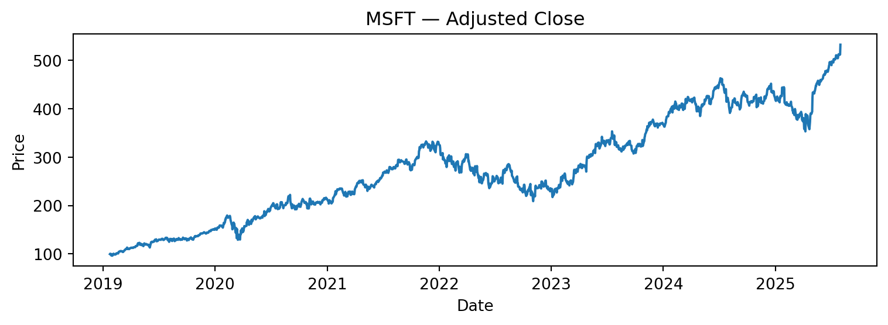
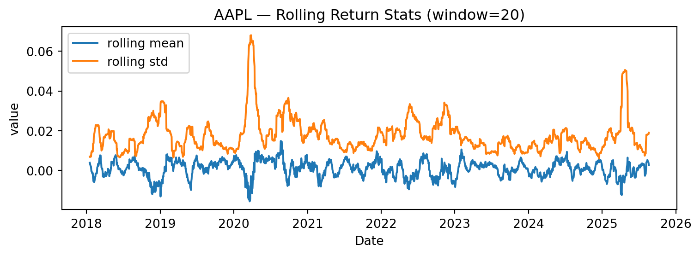
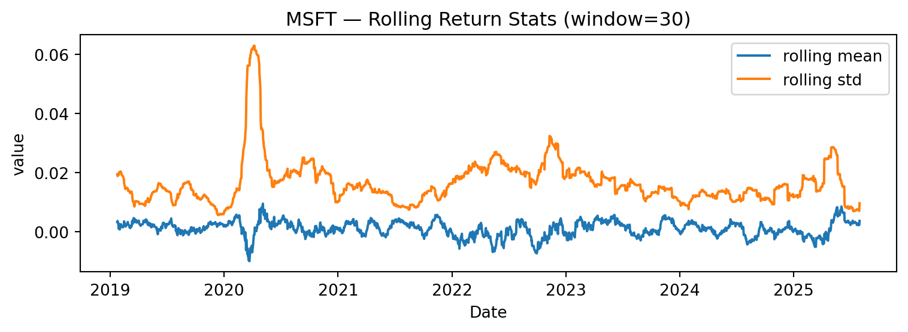

('MSFT', '2019-01-01', '2025-08-01', 30)Stock EDA
Note
This report is parameterized. To change inputs without editing code, pass -P symbol:MSFT -P start_date:2019-01-01 -P end_date:2025-08-01 -P rolling:30 to quarto render.
Setup parameters if using Python
Download and prepare data
| Price | close | volume | log_return | roll_mean | roll_vol |
|---|---|---|---|---|---|
| Ticker | msft | msft | |||
| Date | |||||
| 2019-01-24 | 99.551674 | 23164800 | -0.004791 | 0.003268 | 0.019459 |
| 2019-01-25 | 100.460930 | 31225600 | 0.009092 | 0.003632 | 0.018855 |
| 2019-01-28 | 98.501785 | 29476700 | -0.019694 | 0.002260 | 0.019113 |
| 2019-01-29 | 96.495743 | 31490500 | -0.020576 | 0.000991 | 0.019308 |
| 2019-01-30 | 99.720406 | 49471900 | 0.032871 | 0.002669 | 0.020139 |
Price over time
PosixPath('figs/MSFT_price.png')
Daily log returns — histogram
PosixPath('figs/MSFT_hist.png')
Rolling mean & volatility (window = {params.rolling})
PosixPath('figs/MSFT_rolling.png')
Summary table
| n_days | start | end | mean_daily_ret | std_daily_ret | ann_vol_approx | |
|---|---|---|---|---|---|---|
| 0 | 1639 | 2019-01-24 | 2025-07-31 | 0.00102 | 0.018195 | 0.28884 |
Note: Educational use only. This is not trading advice.